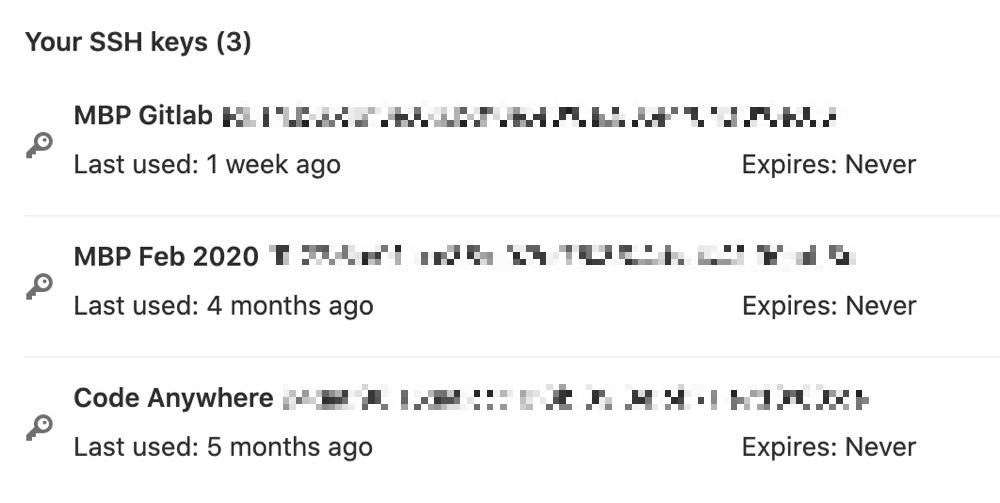
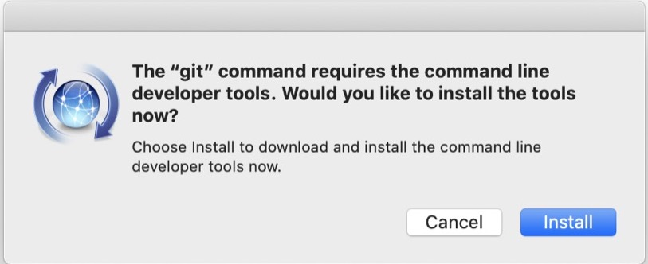
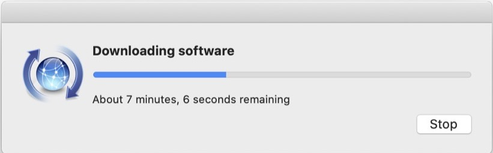
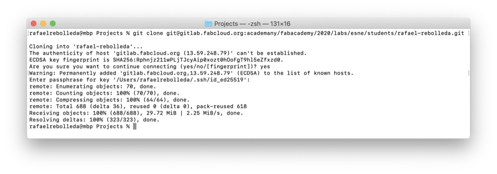
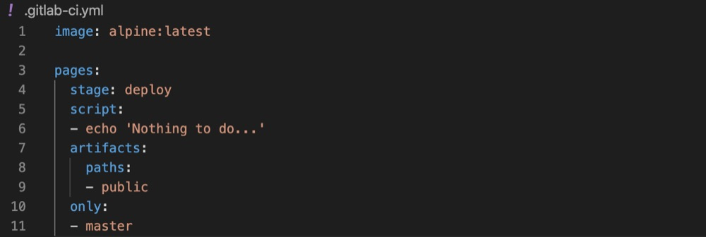
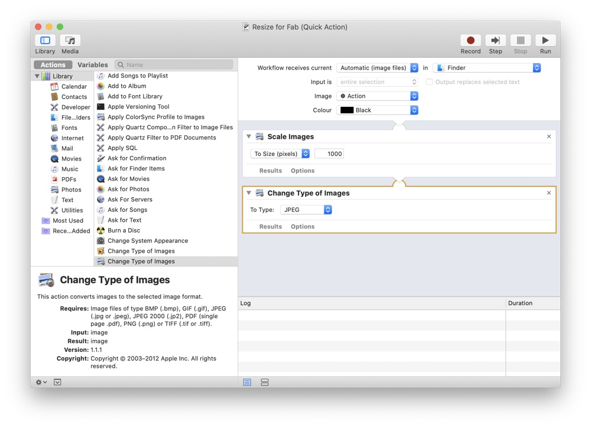
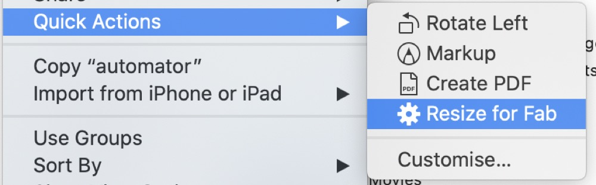

<!DOCTYPE html>
<html lang="en"></html>
<head>
  <meta charset="utf-8">
  <meta content="IE=edge" http-equiv="X-UA-Compatible">
  <meta content="width=device-width, initial-scale=1" name="viewport">
  <title> Rafael Rebolleda — Fab Academy 2020 Documentation</title>
  <!-- Google Fonts-->
  <link rel="stylesheet" href="https://fonts.googleapis.com/css?family=Catamaran&amp;display=swap">
  <link rel="stylesheet" href="../css/main.css">
</head>
<body> 
  <nav>
    <header>
      <ul>
        <li>Rafael Rebolleda</li>
        <li>ESNE (+ LEON)</li>
        <li>Madrid, Spain</li>
      </ul>
      <p class="bio">CX consultant and professor. Single, semi-remote Fab Acadeny student.</p>
    </header>
    <ol>
      <li><a class="red" href="../">About me</a></li>
      <li><a class="blue" href="../FP/">Final Project</a></li>
      <li><a class="blue" href="../DEV/">Project Development</a></li>
    </ol>
    <h1>Assignments</h1>
    <ol> 
      <li><a href="../W1/">Principles & Practices</a></li>
      <li><a href="../W2/">Computer Aided Design</a></li>
      <li><a href="../W3/">Computer Controlled Cutting</a></li>
      <li><a href="../W4/">Electronics Production</a></li>
      <li><a href="../W5/">3D Scan + Printing</a></li>
      <li><a href="../W6/">Electronics Design</a></li>
      <li><a href="../W7/">Computer Controlled Machining</a></li>
      <li><a href="../W8/">Embedded Programming</a></li>
      <li><a href="../W9/">Input Devices      </a></li>
      <li><a href="../W10/">Applications & Implications</a></li>
      <li><a href="../W11/">Output Devices</a></li>
      <li><a href="../W12/">Interface Programming</a></li>
      <li><a href="../W13/">Intellectual Property</a></li>
      <li><a href="../W15/">Molding & Casting</a></li>
      <li><a href="../W16/">Wildcard: Waterjet CCC</a></li>
      <li><a href="../W17/">Mechanical & Machine Design</a></li>
    </ol>
  </nav>
  <main>
    <h1>W1: Principles and Practices</h1>
    <h2>Setting Up</h2>
    <p>I'm on a rather fresh installation of macOS Catalina, so the first thing to do was to generate an ssh key and set up git.</p>
    <h3>Generating an SSH key</h3>
    <p>I just followed <a href="https://docs.gitlab.com/ee/ssh/README.html#generating-a-new-ssh-key-pair">the very simple tutorial on Gitlab's Docs</a>. It will guide through generating the key pair and uploading it to <a href="https://gitlab.fabcloud.org/profile/keys">Gitlab's SSH keys section in your profile</a>:</p>
    <p>Now wer're ready to set up git to clone the repo locally and being adding to it and uploading back to Gitlab.</p>
    <h3>Setting Up git</h3>
    <p>The git community has <a href="https://git-scm.com/docs/gittutorial">a nice tutorial on their official website</a>.</p>
    <p>On macOS, typing 'git' on Terminal will prompt you to install the Command Line Developer Tools automatically.</p>
    <p>Once the key is uploaded and we've got git running locally, we just clone the remote repository from Gitlab:</p>
    <h3>Designing and coding the website</h3>
    <p>I wanted to try a template than the default with less clicking to move back and forth between assignments.</p>
    <p>There are many, many good text editors out there, some free like <a href="https://atom.io/">Atom</a> or paid like <a href="https://www.sublimetext.com/">Sublime Text</a>. I settled on <a href="https://code.visualstudio.com/">Visual Studio Code</a> because it's free, extensible, multiplatform and well supported.</p>
    <p>I also wanted to experiment with something different than good old HTML, so I'm going to be trying out <a href="https://pugjs.org/api/getting-started.html">Pug</a> and <a href="https://stylus-lang.com/">Stylus</a>. Both allow for some utilities and simplified coding. I'll be compiling these to HTML with <a href="https://codekitapp.com/">CodeKit</a>.</p>
    <h3>Publishing to FabCloud</h3>
    <p>FabCloud can make your repo into a website if you isntruct them how to build it after every commit pushed.</p>
    <p>In my case it's just simple HTML so there isn't much to do.</p>
    <p>Once some code is written it's a matter of comming the changes and pushing back to FabCloud:</p><code>git add .</code><code>git commit -m "commit message"</code><code>git push</code>
    <p>It may take a bit to update the published website.</p>
    <h3>Other tidbits</h3>
    <p>I've also made <a href="Resize-for-Fab.zip">a little Automator workflow</a> to process images for publication, reducing their size and converting them to jpg:</p>
    <p>Here we can see it in action in Finder</p>
    <h1>The <em>new</em> Final Project</h1>
    <p>With the pandemic still ongoing, I've found myself in July still with limited access to the Fab Lab, so in accordance with my mentor, we've decided to take a different approach to how I thought the Fab Academy would unfold. To that extent, we've come up with a new final project that will make the most of the assignments, specially using the machine as part of it.</p>
    <h2>Background</h2>
    <p>Light-painting is an art form which consists taking pictures of moving light, capturing the traces as it moves in space. I've doing light-painting photogrpah for a while, in a very rudimentary way.</p>
    <p>This is my set up: a dark background in a closet. This is actually the same room and spot from which I've had to connect sometimes throughout the pandemic confinement!</p>
    <p>And this are the lights I've used: kids toys and a laser pointer.</p>
    <p>These are just a couple of shots with this set up:</p>
    <h2>Other projects</h2>
    <p>I've seen there have been some other projects around light painting in Fab Academy. For example <a href="http://archive.fabacademy.org/archives/2017/fablabhornafjordur/students/201/week11.html">this one</a> made during Fab Academy 2017 by Ana Cabral, Ola Mirecka and Birkir Thor:</p><iframe src="https://player.vimeo.com/video/213813915" width="640" height="360" frameborder="0" allow="autoplay; fullscreen" allowfullscreen></iframe>
    <p>Or <a href="http://fab.cba.mit.edu/classes/863.17/Harvard/machines/index.html">this one</a>, which is somewhat similar:</p>
    <video src="http://fab.cba.mit.edu/classes/863.17/Harvard/machines/photos/programming/14.mp4" loop autoplay muted></video>
    <p>What I'm thinking of is something different, though.</p>
    <h2>Project Overview</h2>
    <p>For this project, I'm looking to create a machine that does something similar to another shot of mine, albeit in a more portable studio with more interesting possibilities.</p>
    <p>In short, the idea to make <strong>a closed box with moving lights create pseudo-random light-paintings via long exposure shots</strong>.</p>
    <p>The box will be completely black inside, and has a few small opening for a mobile camera phone to see thorugh. The faces will be covered in velcro to allow for easy attachment.</p>
    <p>Inside, concentric circles with LEDs will spin and their traces will be captured. Both LED behaviour and <em>some aspects</em> of the movement can be programmed and or controlled.</p>
    <p>Each circle could have up to four LEDs, as seen in the cross-section below, although that's probably not necessary to creat interesting effects, and could be a power consumption hurdle.</p>
    <p>The movement behaviour should be something similar to this example:</p><iframe width="560" height="315" src="https://www.youtube.com/embed/t1JNWnTpmkA" frameborder="0" allow="accelerometer; autoplay; encrypted-media; gyroscope; picture-in-picture" allowfullscreen></iframe>
    <p>So, ideally, we would have a step motor at the base, controlling the outer circle's rotation, and the one nested inside would spin freely.</p>
    <p>Some thought has been given to easier, linear approaches, but the results are different, closer to the examples shown above from previous years:</p><hr>
    <h1>Previously, in a pre-pandemic life...</h1>
    <p>(These were my original thoughts about the final project, but in light of the pandemic and associated restrictions, we thought it lacked focus and "tightness". I will have to follow up on this later on :)</p>
    <p>I approach Fab Academy as a means to <b>prototype as many ideas as I can around around the theme presented below.</b>, as well as aqcuiring new skills to flesh them out beyond the notebook.</p>
    <p>To that extent, I foresee the final project taking shape as we advance through the program and I see how the learnings can be applied to my interests, by then doing self-contained micro-projects for each assignment. It's a somewhat similar approach to the one described in picture below (don't know who to credit it to!)</p>
    <p>Similar to the process described above, there's an underlying theme that connects all products, but these are actually all different, not necessarily part of a bigger project.</p>
    <h2>Final project ideas</h2>
    <p>I have a number of ideas around the <b>creation and manipulation of music: instruments, effects (re-parametrizers, as a good friend liked to call them :), accesories and devices in general that enable new ways of approaching music composition and performance.</b></p>
    <p>In particular, I'm interested in moving forward the <b>expresiveness</b> available to the performer in now-classic instruments, like electric guitars, which haven't really changed much since their original concept, as well as <b>bringing HCD and HCI approaches</b> to the design and development of <b>modern computational musical devices</b>.</p></p><p>Moreover, I'm particularly interested in moving my skills <b>from one-off, handmade products to semi-industrial, machine-made products</b>. I find that some of my ideas require a precision that is hard to achieve and/or replicate by hand</p>
  </main>
  <footer>
    <hr>
    <p><a rel="license" href="http://creativecommons.org/licenses/by-nc/4.0/"></a><br />This work is licensed under a <a rel="license" href="http://creativecommons.org/licenses/by-nc/4.0/">Creative Commons Attribution-NonCommercial 4.0 International License</a>.</p>
  </footer>
</body>